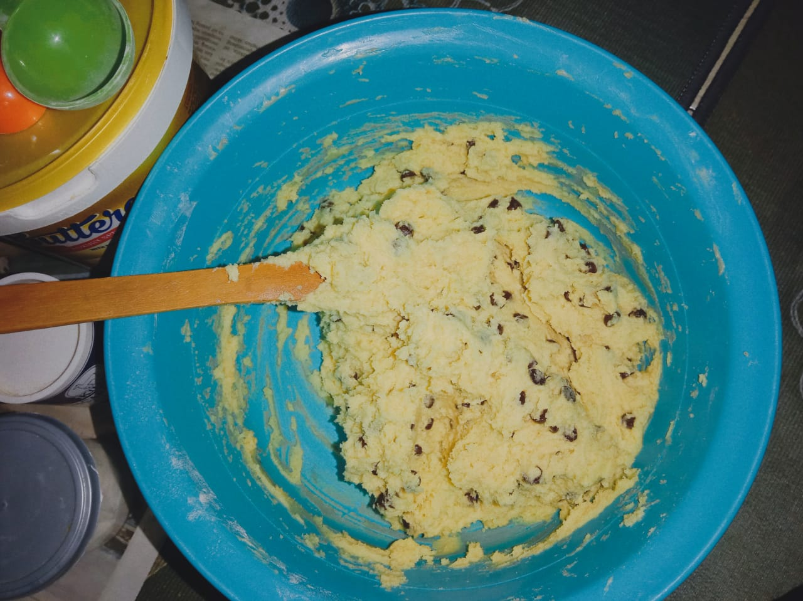
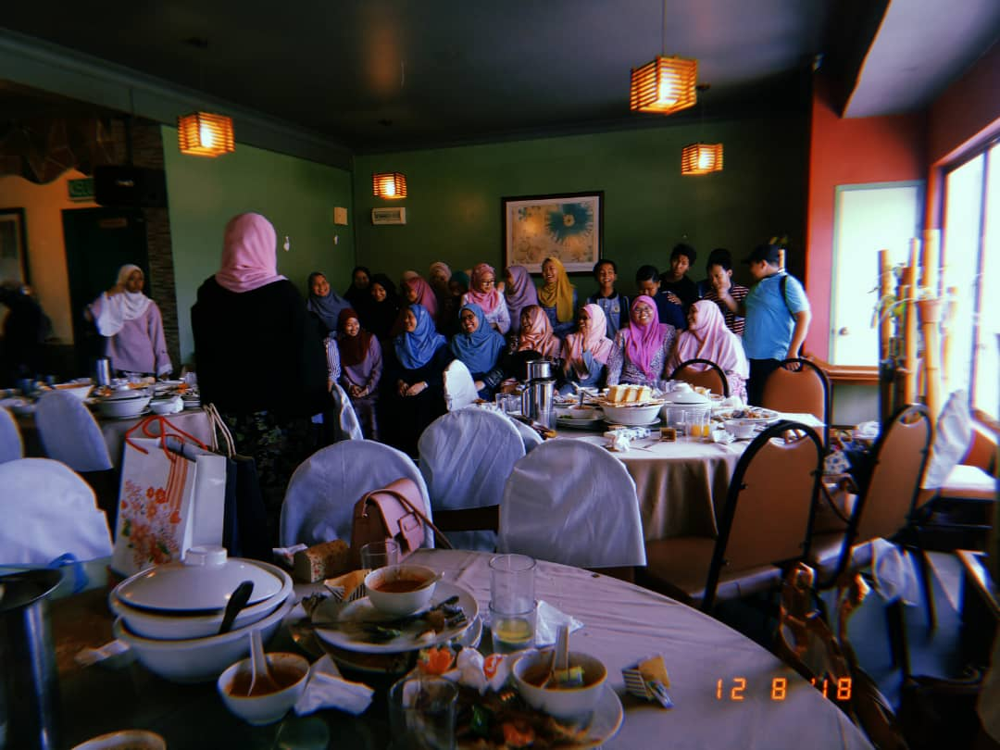
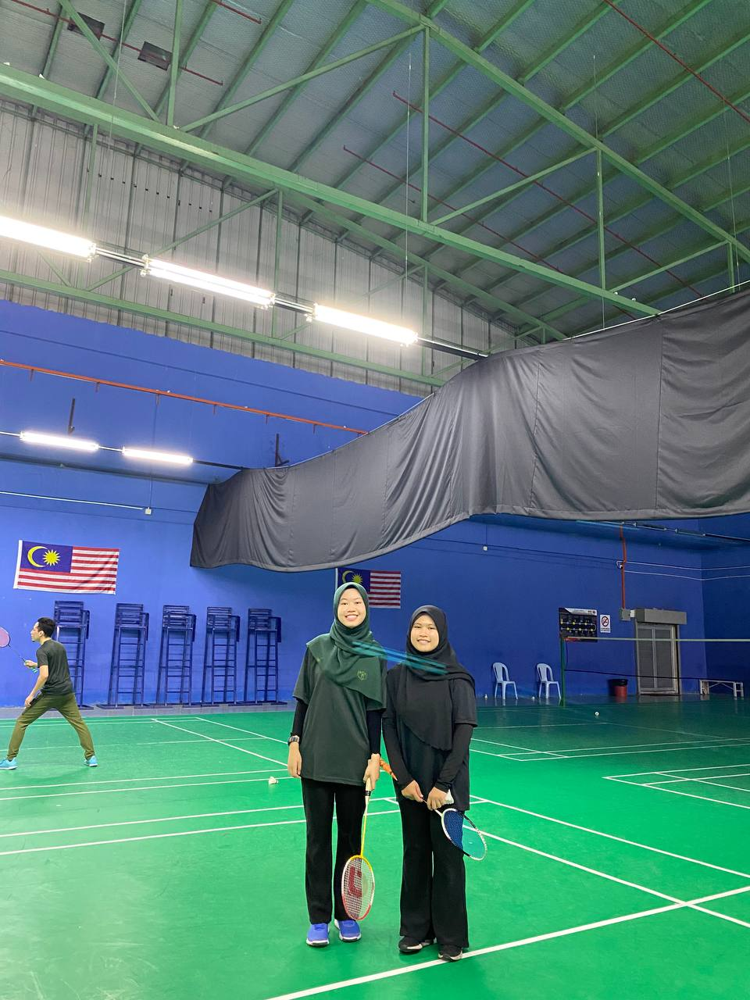
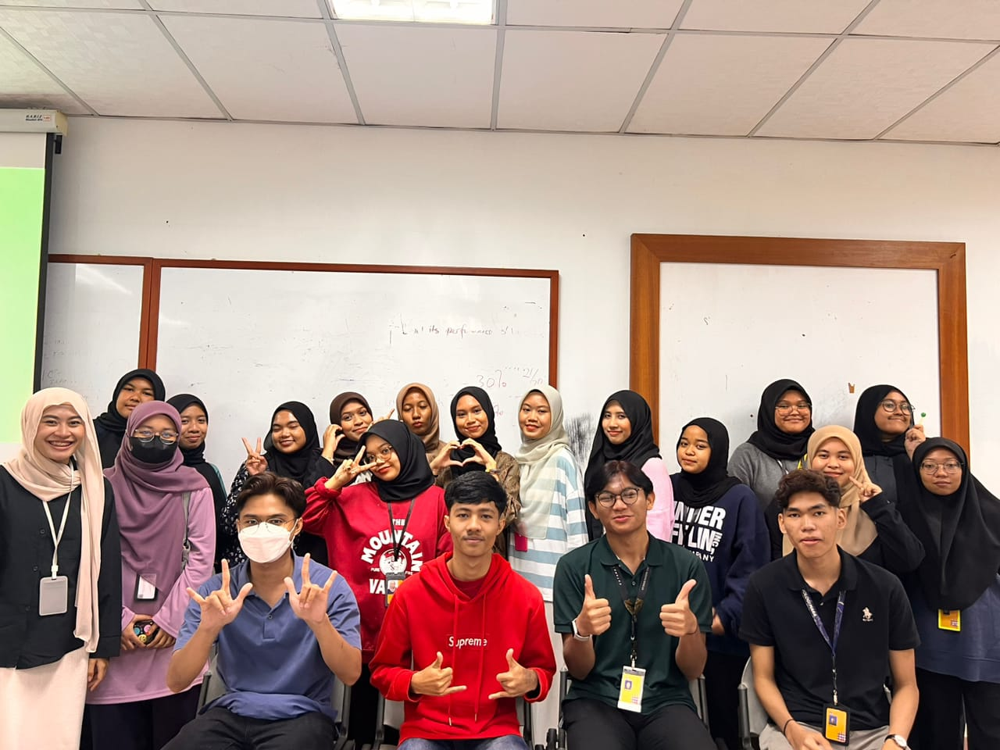
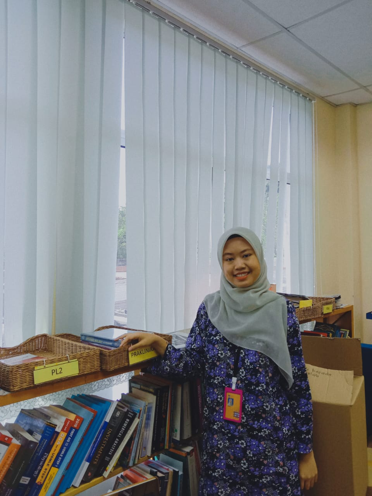

Since my early days, I have been exposed with the works in the kitchen by my mom. For that reason, I do have a things in cooking. Especially for baking. Also, one of my experience is when I got into a cooking competition during my high school.

Related to above, because of my love in baking. I also once started my own business. I sold home-made chocolate chip cookies to my friends, and my family. It is one of memorable experience because its something that I enjoy.

During my highschool, I was one of the student that active in cocuriculum. Those days, I always participate in many things such as handling event. This experience does help me a lot in communicate with other people.

Also, I was my high school representative for Badminton. I participate a lot of match with my partner. To be honest, being a representative for my school in Badminto is one of the greatest memories and experiences happened to me since I have playing badminton since young. Just like you can see, this is my picture with my partner during our practice.

As I mentioned before, I was active in handling event during my high school days. As I got into university, I do some time participate in handling event too. This picture provided is the first event that participate as a university student.

Last but not least, one of the experience that I adore is when I was doing industrial training at the Tun Seri Lanang Library, UKM. It indeed opened my eyes in entering work industry. Considering that I have never do any part-time job, this experience definitely taught me well.